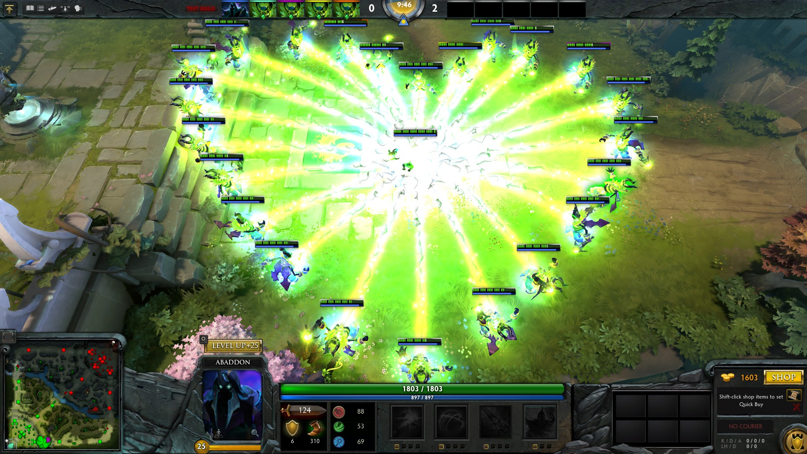

Дота 2
Dota 2 известна своим крайне недружелюбным отношением к новичкам и комплексными, не всегда очевидными механиками, но, если не говорить о нюансах, базовые правила игры не слишком сложно понять. В каждом матче две команды по пять игроков сталкиваются на симметричной карте и пытаются взять базу соперника штурмом, чтобы уничтожить главное здание — сами игроки чаще всего называют его «троном». Но это не так просто сделать: подступы к тронам (т.н. «линии») защищены плотной чередой оборонительных башен, которые не получится сломать самостоятельно.
Для того, чтобы планомерно продавить защиту оппонентов, игрокам нужно поддерживать союзных солдат под управлением ИИ — они автоматически движутся по линиям, пока не дойдут до трона. Побеждая вражеских солдат и героев, игроки зарабатывают опыт для прокачки своих персонажей и золото, необходимое для покупки предметов: от зелий лечения и свитков телепортации до магических артефактов, повышающих характеристики. Иными словами, для того, чтобы вырвать победу, игроки должны не только показывать личный навык, но и отлично работать в команде — без тщательной координации действий ничего не выйдет.